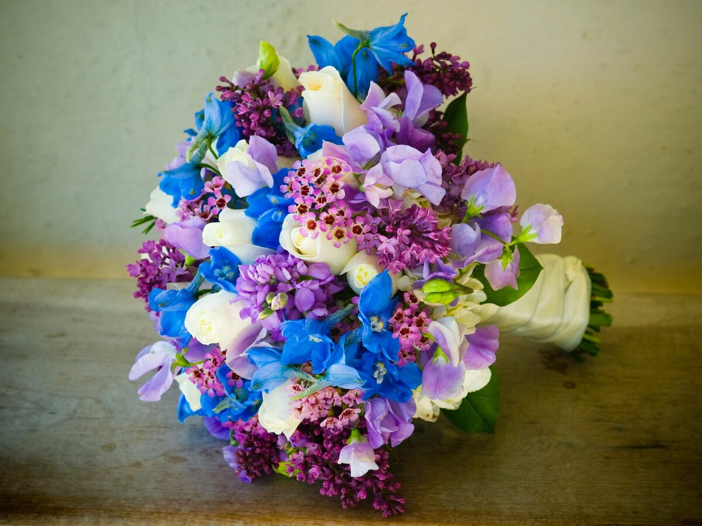
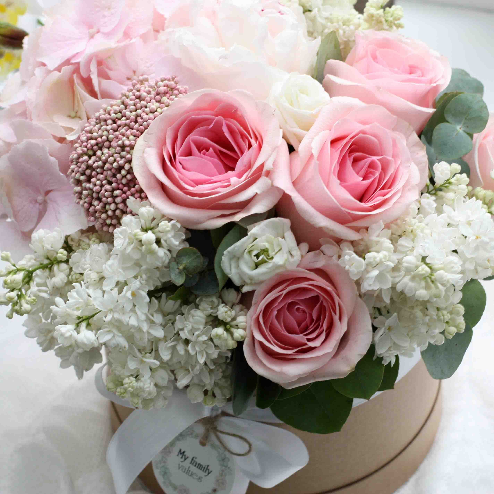
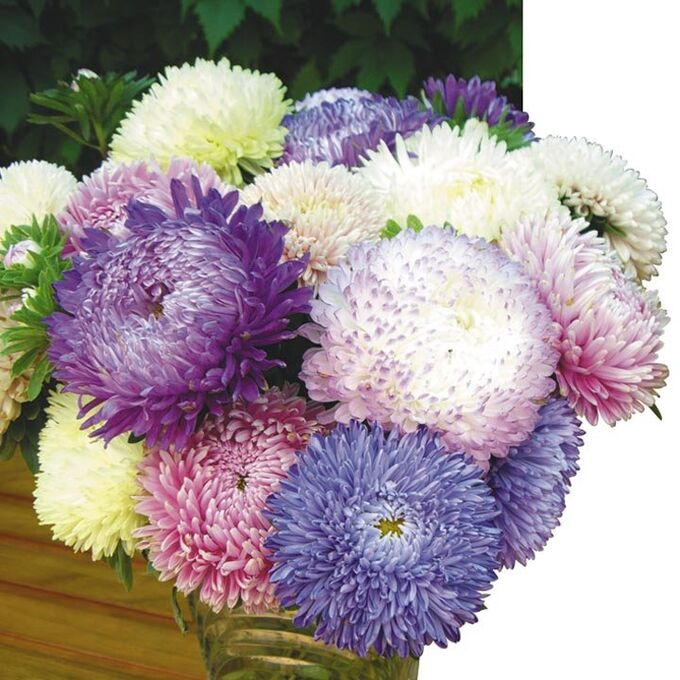
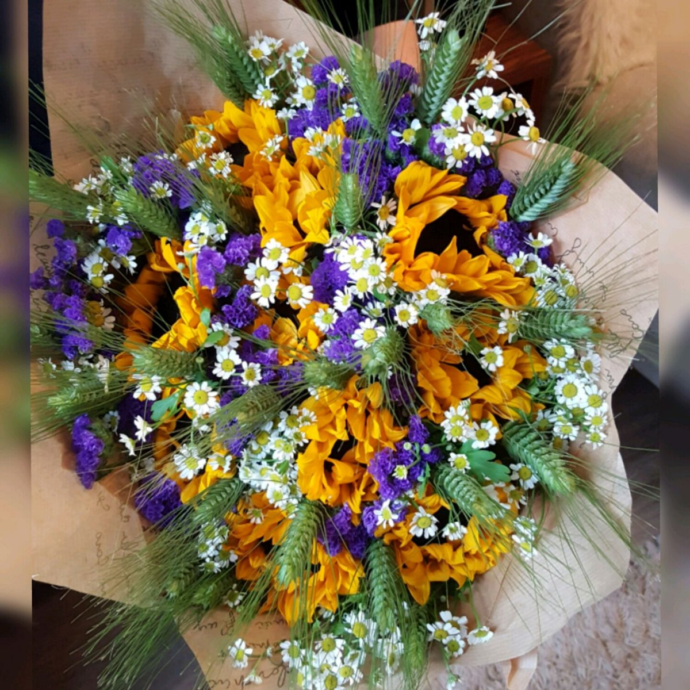
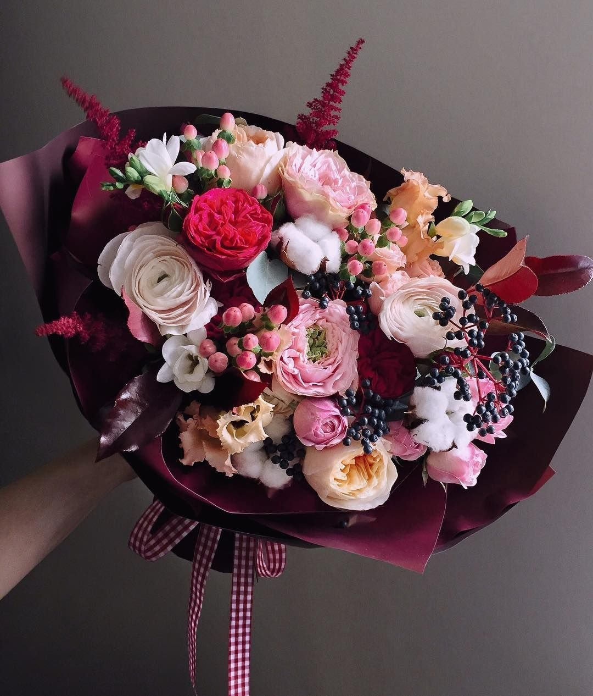
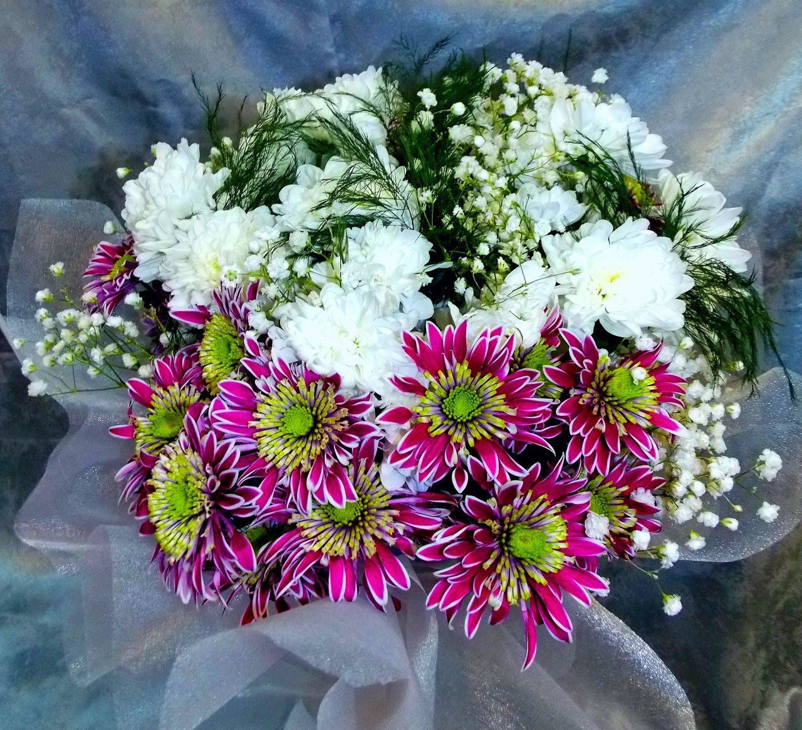

ЦВЕТЫ-это символ любви, веры, красоты. Они поднимают людям настроение и делают их счастливыми. Поэтому принято дарить на правдники, как знак внимания букеты. В 21 веке букетов неограниченное количество видов. Посетив этот сайт вы сможете найти самый лучший и красивый и букет. И сможете рассказать самое интересное об этом букете.
Букеты с цветами могут быть роскошными или скромными, строгими или трогательными, их дарят по поводу и без. И это так естественно, что мы даже не задумываемся, почему цветам отводится такое важное место в нашей жизни.
Кто подарил женщине цветы в первый раз? Существует множество версий, почему мужчины дарят женщинам букеты цветов. Одна из них уходит корнями в глубокую древность и основывается на библейских сюжетах. Согласно ей, Ева после изгнания из Рая очень грустила о садах, в которых благоухали чудесные растения. Она скучала по обстановке, к которой привыкла и считала своим домом. Поэтому Адам пошел искать цветы. Когда нашел поляну с разными цветущими растениями, собрал их в большой букет и принес Еве. Есть языческая версия. Она гласит о том, что традиция дарить букеты трансформировалась в светскую из обрядов жертвоприношений Богине-Матери. Это божество олицетворяло женственность, красоту, благополучие, любовь. Место поклонения украшали красивыми цветами, устилали ими дорожки. Со временем смысл утратился, а букет стал восприниматься как подарок.
Каждый цвет растения имеет свое значение, и подарив букет с разными ,красочными растениями вы дарите людям много радости .Чтобы понять какую эмоцию хотите подарить? Я сделала для вас таблицу с цветими и их значениями.Прошу ознакомиться с нею.
Основные цвета , выражающие чувства, отношения и идеи :
| цвет | значение |
| красный | цвет жизни и любви ( отсюда роза — символ любви , гвоздика — страсти ) , а также как цвет крови , символ гнева и мести ( цвет войны и революции ) |
| белый | символ чистоты и невинности ( лилия ) |
| чёрный | символ печали , траура ; |
| жёлтый | символ отвращения , ненависти ; кроме золотистого — символа солнца и радости |
| зелёный | символ надежды |
| голубой | цвет богов |
| синий | символ верности (незабудки, фиалки ) , спокойствия , бесконечности |
| пурпурный | символ величия |
| оранжевый | цвет радости , тепла , урожая и праздника |
| фиолетовый | символ роскоши и достоинства ; мистический |
| светло-зелёный | чистота , веселье , щедрость |
| розовый | символ элегантности , изысканности и нежности |
| тёмно-зелёный | цвет надежды и плодородия |
Познакомившись с таблицей ,давайте узнаем , что же такое букет?
цветочный букет — художественная композиция декоративного назначения, составленная из частей растений, а также, иногда, декоративных элементов нерастительного происхождения. В большинстве случаев основой букета являются побеги, несущие распустившиеся цветки (в просторечии называемые «цветами»). В XX веке букеты стали также изготавливать из оригинальных продуктов: конфет, фруктов, игрушек; свадебные букеты иногда делают из брошей, ткани, перьев и прочих декоративных материалов. Композиция из сухих (высушенных) частей растений называется сухим, или сухоцветным букетом.
Как и говорила видов цветов и их видов огромное количество их не сочитать ,поэтому я вам рассказала о самых популярных цветах.Рассмотрев таблицу вы будете знать все: о розе, о тюлпане, о хризантеме , о стрению. К вашему вниманию таблица.
цветы и их значения РОЗЫ
| Роза (белая) | чистота и невинность , скромность и нежность , таинственность. « Я добьюсь тебя » , « Ты ангел » |
| Роза (бутон) | невинное сердце. |
| Роза (бутон, белый) | юность , неопытность , очарование, девичество , «Я готов ждать тебя » , « Я не хочу тебя потерять » |
| Роза (бутон, красный) | чистота , прелесть , любовь, « Мне кажется, я в тебя влюбился » , «Я рад , что мы позникомились » , « С каждым днем мои чувства к тебе все сильнее » |
| Роза (желтая) | счастье , радость. «Ты — мое солнце ». Цветок , выражающий самые позитивные эмоции . Согласно языку цветов , желтые розы не имеют никакого отношения к измене , ревности или разлуке ( хотя такое толкование их символического значения очень распространено ) |
| Роза ( красная и белая вместе ) | единство , нежность и страсть . « Ты для меня — весь мир! » |
| Роза (красная) | любовь , страсть . «Я люблю тебя», "Я не могу без тебя" , "Ты должна быть моей" |
| Роза (кремовая) | элегантность , гармония , совершенство , постоянство. « Я помню ! Всегда ! », « Мы с тобой — идеальная пара » , « Ты выше всяких похвал ! » |
| Роза (розовая) | наивысшее счастье, « поверь мне » |
| Роза (свадебная) | счастливая любовь , взаимность , « Мы вместе навсегда» |
| Роза Гран при | уважение, щедрость , любовь , доверие , « Ты достойна самого лучшего» . Роза Гран при выражает самые благородные чувства |
цветы и их значения ТЮЛЬПАНЫ
| Тюльпан | символ чистой любви , большого счастья ; слава , гордость ; гармония , превосходный любовник . Цветок — эмблема Голландии |
| Тюльпан (желтый) | «Твоя улыбка , как солнечный свет » |
| Тюльпан (красный) | объяснение в любви , поздравления , « поверь мне » , « Желаю тебе счастья» |
| Тюльпан (пестрый) | « Твои прекрасные глаза ! » , « Жизнь прекрасна ! » , « Я горжусь тобой ! » |
цветы и их значения ХРИЗАНТЕМЫ
| Хризантема (обычная) | отдых , веселье , " Ты прекрасный Друг" |
| Хризантема (красная) | любовь , " Я Люблю ! " |
| Хризантема (белая) | правда |
| Хризантема (желтая) | хрупкая любовь |
цветы и их значения СИРЕНЬ
| Сирень | красота , влюбленность , первые волнения любви |
| Сирень (белая) | первая любовь , « Давай будем любить друг друга |
| Сирень (лиловая) | « Любишь ли ты меня еще ? » |
| Сирень (розовая) | любовь и признание . |
| Сирень (фиолетовая) | «Мое сердце принадлежит тебе ! » |
|  |  |  |
|  |  |  |
Также в каком виде и на какое событие вы дарите цветы имеет большое значение
цветы в горшках
Цветы в горшках символизируют долгую жизнь, поэтому такой подарок женщине в возрасте станет пожеланием долголетия.
Если человек, которому предназначены цветы, занимается цветоводством, то ваш цветы в горшке будут оценены по достоинству. В данном случае лучше угодить, чем придерживаться правил этикета.
Горшок с цветами прекрасно украшает рабочее место, поэтому такой подарок уместен для коллеги по работе.
Идеальным поводом, чтобы подарить цветы в горшке является новоселье, празднование мероприятия у соседей, поздравление для учительницы, знак внимания 8 марта.
Подчеркнуть нежность и расположение к маме помогут разновидности цветов в розовых оттенках.
Это могут быть розы, пионы, лилии, тюльпаны. Любые цветы можно разбавить несколькими веточками зелени.
Если нет привязки к конкретному мероприятию, то можно остановить выбор на полевых цветах.
Удачным вариантом для мамы станет букет из ромашек или хризантем. Такие цветы простоят в вазе несколько дольше, чем розы.
Маме домохозяйке придутся по вкусу цветы в горшке, они обеспечат дополнительный уют и тепло в квартире.
Покупать корзину цветов для мамы целесообразно только на особенные даты. От любящих детей маме приятно получить даже маленький букет ландышей. Какие бы цветы в подарок маме вы не выбрали, составляйте композицию на свой вкус. Не стоит останавливать выбор на готовых букетах.Проверяйте общее количество растений по черенкам. Для классического варианта достаточно 7-11 бутонов. При меньшем количестве цветов потеряется красивый внешней вид.
Цветы в подарок для мужчине
Точка зрения, что мужчинам цветы не дарят, ошибочна. Представители сильного пола с удовольствием принимают цветы.
Букет цветов в подарок для мужчины должен подчеркнуть его мужество, поэтому нежным и хрупким цветам в данном случае не место. Универсальным вариантом станут хризантемы.
Для мужского букета хорошо подойдут темные оттенки цветов. К примеру, бордовые гладиолусы являются символом удачи, а фиолетовые астры подчеркнут вашу любовь и признательность.
Выразить уважение поможет букет ирисов, синий оттенок наполняет их мужским характером. Комбинацию ирисов с нарциссами принято считать пожеланием удачи.Букет для мужа или папы можно составить из лилий, орхидей, дельфиниумов. Также подойдут каллы, герберы, геликонии, стрецилии.
Мужской букет должен иметь вытянутую угловатую форму и минимум деталей. Бумага для упаковки должна быть очень консервативной.
Цветы в подарок подруге
Подбирая цветы в подарок подруге, отдавайте предпочтение светлым нежным оттенкам. Можно подобрать красивую комбинацию из нескольких разновидностей цветов.
Цветы белого цвета помогут выразить ваше дружеское отношение. Белоснежные пионы, розы, тюльпаны, розы подчеркнут вашу искренность и трепетное отношение.
Желтые и оранжевые оттенки станут источником солнечного света, символизируют счастье и радостные эмоции.
Для интересного сочетания цветов комбинируйте эустомы и фрезии, тюльпаны и ирисы, лилии и каллы. Выигрышно сочетаются такие цвета как белый, розовый и лиловый.
Подчеркнуть нежность букета помогут веточки барбариса, эвкалипта, аспарагуса, рускуса.
Не стоит собирать слишком большой букет. Иначе подруга может подумать, что вы хотите подчеркнуть свое материальное благополучие.
Цветы в подарок коллеге или руководителю
Знак внимания начальнице или коллеге должен быть приурочен к конкретному событию. В противном случае ваш жест могут неправильно истолковать.
Цветы в подарок начальнице должны иметь правильное содержание и упаковку. Скорее всего вы не знаете предпочтения своего руководителя, поэтому останавливайте выбор на универсальных ВИП-композициях.
Выбирайте цветы в одной цветовой гамме. Для букета начальнице или коллеге идеально подойдут хризантемы, розы, лилии, герберы, ранункулюсы.
Для букета начальнице подбирайте насыщенные оттенки. Символичным цветом являются желтый и оранжевый – подчеркивают успешность и властность личности.
Цветы в подарок дедушке — какие цветы подарить?
Цветы в подарок дедушке являются знаком глубокого уважения. Характер букета должен подчеркнуть силу и мужественность дедушки.
Букет из величественных гладиолусов станет идеальной композицией для пожилого человека. Букет красных эдельвейсов или гвоздик поможет выразить вашу любовь и трепетное отношение.
Выразить душевное тепло можно с помощью композиции желтых цветов. Для творческой композиции подойдут голубые гиацинты или ирисы.
Цветы в подарок на день рождения
Цветы в подарок на день рождения должны соответствовать возрасту юбиляра. Самым беспроигрышным вариантом является роза. Королевский цветок всегда будет актуальным.
Цветы в подарок мужчине на юбилей лучше выбирать темных и насыщенных оттенков. Подойдут гвоздики, герберы, каллы, розы, гладиолусы.
Цветы в подарок женщине на юбилей можно подобрать в розовых и кремовых оттенках. Подойдут розы, лилии, орхидеи, тюльпаны, хризантемы.
Для юбилея важен стиль оформления цветов. Подбирайте строгие и стильные аксессуары. Уместным дополнением станет декоративна корзина.
Цветы в подарок на 8 марта
Цветы в подарок к 8 марту должны соответствовать весенней погоде, поэтому отдаем предпочтение первоцветам. Оттенки цветов должны быть яркими и жизнерадостными.
Несмотря на то, что желтый цвет символизирует разлуку, 8 марта этот цвет очень актуален. Красные и желтые тюльпаны станут символом счастья и гармонии.Актуальным подарком на 8 марта станут весенние цветы в горшке. К таким относятся гиацинты, крокусы, нарциссы, примулы.
Универсальным подарком станет орхидея или сенполия в горшке.Букет пестрых тюльпанов подойдет как маме, бабушке, сестре, так и начальнице, коллеге, подруге.
Учительнице, подружке, бабушке можно подарить букет желтых нарциссов. Маму, бабушку, коллегу порадует веточка желтой мимозы.В цветочную композицию можно соединить белые тюльпаны и желтые ирисы, нарциссы и ирисы, разноцветные тюльпаны и т. д.
Цветы в подарок на 14 февраля
Цветы в подарок на День влюбленных помогают выразить трепетные и теплые чувства. Букет на 14 февраля должен быть креативным.
Композиция в виде сердца придется как нельзя кстати. Интересно смотрятся игрушки из живых цветов.
В холодное время года цветы являются источником тепла и света. Самым романтичным цветком считается роза.
Чтобы выразить свои чувства, достаточно одной красной розы на длинной ножке.
Орхидея поможет подчеркнуть загадочность и таинственность момента. Яркие герберы помогут приукрасить пасмурный серый день.
Тюльпаны напомнят о приближении весны и пробудят новые чувства.
Символичным является количество цветов. В период романтических отношений достаточно подарить один цветок. Для признания в любви символична цифра 3.
Большое количество цветов подчеркнут крепкую любовь и благополучие.
Цветы в подарок на свадьбу
На свадебное торжество принято дарить шикарные букеты. Цветы в подарок на свадьбу являются правилом хорошего тона. Роскошным вариантом станет корзина с цветами.
Розы на свадьбу являются не самым удачным вариантом. Если розы, то только белого цвета. А вот пионы и георгины станут символом невинности и чистоты. Популярным цветком на свадьбу является лилия.
Цвет цветов на свадьбу должен подчеркнуть невинность и чистоту невесты. С такой задачей хорошо справятся цветы белых и розовых оттенков.
Современные букеты на свадьбу выполняют в форме различных фигур. Такая композиция подчеркнет вашу креативность и старание.
Украшением торжества станет композиция из хризантем и тюльпанов. Символом счастливой супружеской жизни станет букет из утонченных кал.
Букет пионов станет пожеланием богатства и преданной любви. Интересный и необычный букет станет теплым воспоминанием в памяти молодожен.
Теперь мы знаем ,что нужно дарить,чтобы сделать человека счастливым .Удачи и всего самого наилучшего